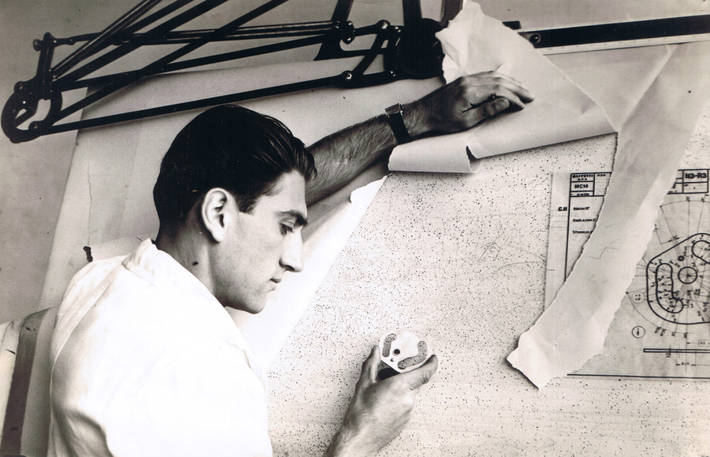
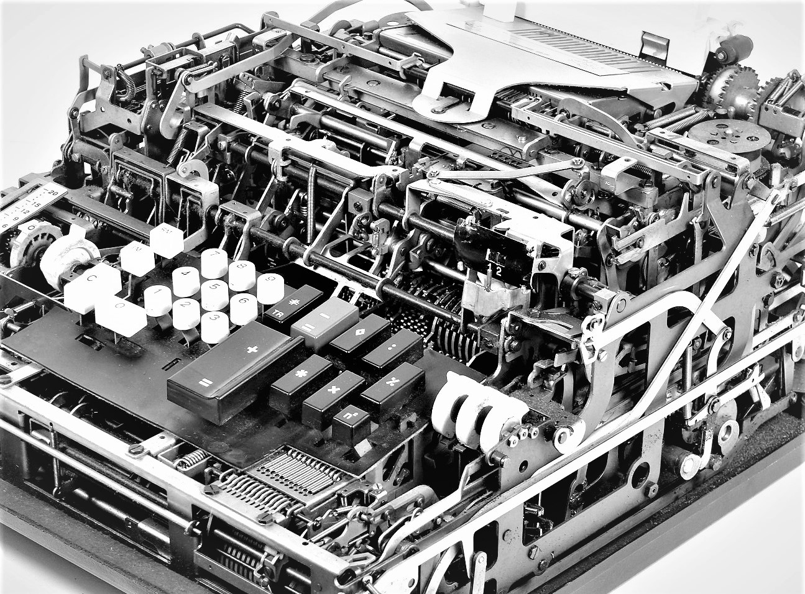
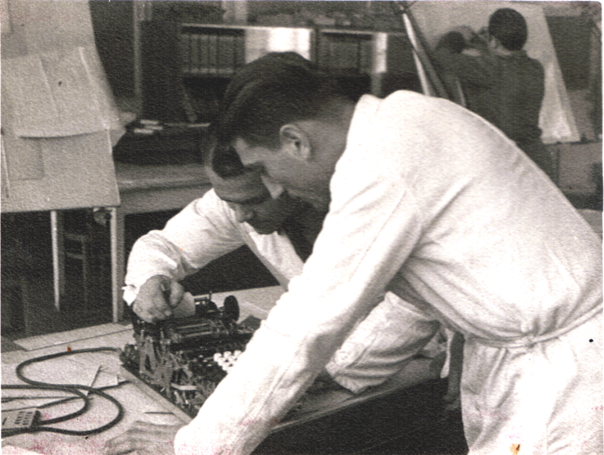
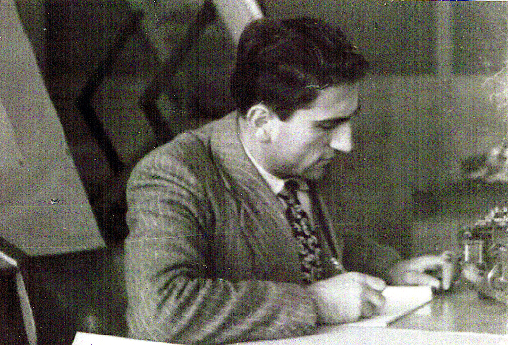

Teresio Gassino

In ricordo di nonno Teresio
«Geniale alter ego» di Natale Capellaro, «ex operaio che ne ripercorreva le orme», «capace di far fare alla meccanica cose stupefacenti»… Un ricordo scritto da Valerio.

La Logos 27
«Certamente la più completa e performante macchina da calcolo meccanica mai realizzata al mondo, ogni dispositivo era un gioiello di genialità e creatività».

Un discorso di Capellaro e i ricordi di chi lavorò al fianco di Teresio
«Caro Gassino. Mi ricordo come fosse ieri l’impressione che Lei mi fece, ottima veramente».

Curriculum
Il curriculum di Teresio, da allievo del Centro Formazione Meccanici a Direttore Centrale Olivetti.